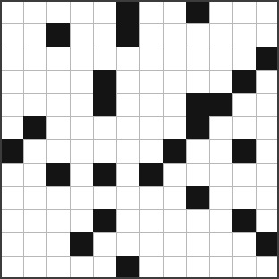
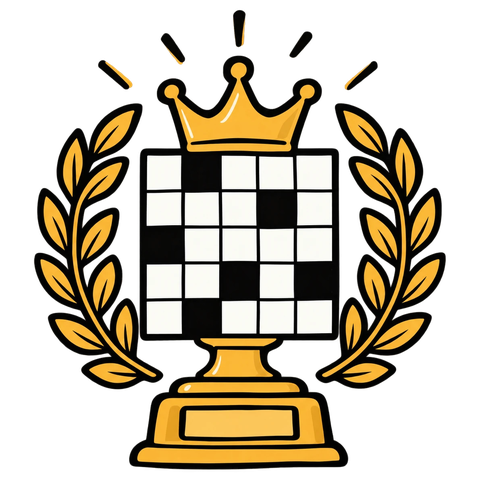

Crucigrama Gamberro
Nº 008

Crucigramas gamberros online gratuitos en español, publicados de vez en cuando
Cada Crucigrama Gamberro es distinto — mismo espíritu, pistas nuevas.

Crucigramas para gente a la que las pistas demasiado fáciles le parecen una falta de respeto.
Nº 008

Cada Crucigrama Gamberro es distinto — mismo espíritu, pistas nuevas.
